Tartan Series 2021 - Challenges in SLAM - What's ahead (Prof. Sebastian Scherer)
강의 링크 - https://youtu.be/acYBSrDpEdQ
SLAM이 처음이라면…
- 선형대수 공부자료 - 링크
- 확률과 통계 공부자료 - 링크
- AirLab Summer School - 링크
- CVPR 2020 SLAM 워크샵 - 링크
SLAM에서 자주 쓰는 단어들
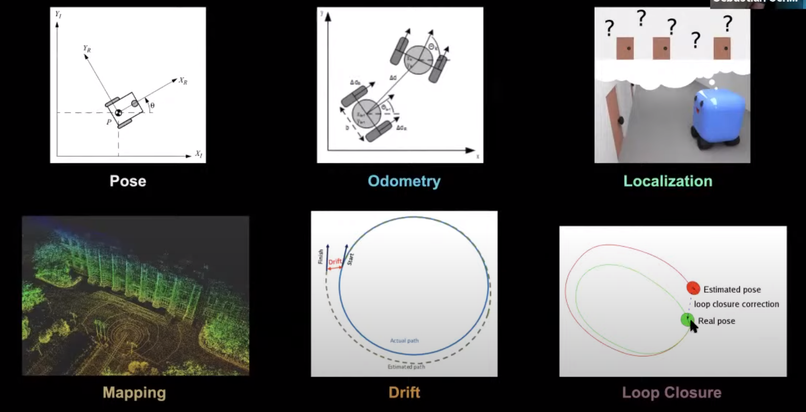
- Pose
- 위치 (Position) + 방향 (Orientation)
- Odometry
- 두 pose간의 상대적 차이
- Localization
- 내가 지도 상 어디에 있는지 풀어내는 문제
- Mapping
- 지도를 그려내는 문제
- Drift
- 연속적으로 위치를 추정할 때 쌓여가는 pose에 대한 오차
- Loop closure
- 동일한 장소로 돌아왔을 때 생기는 loop 내부에서 drift를 해소하는 방법
SLAM이란?
- 기술적 의미: Localization ⇄ Mapping 루프를 통해 위치/맵 추정을 하는 것.
- 먼저 나의 위치를 확인 (localization)
- 맵을 증축함 (mapping)
- 증축된 맵에서 나의 위치를 확인 (localization)
- 맵을 증축함 (mapping)
- …
- 일반적으로 보는 의미: 다양한 센서들로 다양한 추정을 함
- 카메라, 레이더, 라이다, GPS 등과 같이 다양한 센서 값을 어떻게 조합해서 위치/맵 추정을 할 것인가?
- 움직이는 객체가 있을 경우에는? Semantic 정보도 추출할 수 있는지?
- 종종 ‘위치 추정’ 기술을 쉽게 부르기 위해서 SLAM이라고 부르기도 함 (사실 알고보면 그냥 odometry나 mapping인 경우도 많음)
SLAM 기술의 발전 방향
- SLAM 성능
- Robustness의 발전
- Visual / geometric degeneration / challenging scenes (e.g. 안개, 비/눈, 화재, 탄광)
- Efficiency의 발전
- Lightweight image localization
- Dense reconstruction
- Accuracy의 발전
- High resolution
- Robustness의 발전
- 신기능
- Collaborative SLAM
- 여러 대의 agent가 돌아다니면서 각각 맵을 만드는 것.
- Semantic SLAM
- SLAM을 하면서 semantic 정보도 동시에 추출하는 것.
- High resolution map
- 거대 공간 (i.e. large scale)에서 mm단위의 정확한 맵 생성
- Unified map representation
- 카메라로 읽던, 라이다로 읽던, 레이더로 읽던 호환되는 맵
- Collaborative SLAM
SLAM 방법론 개요
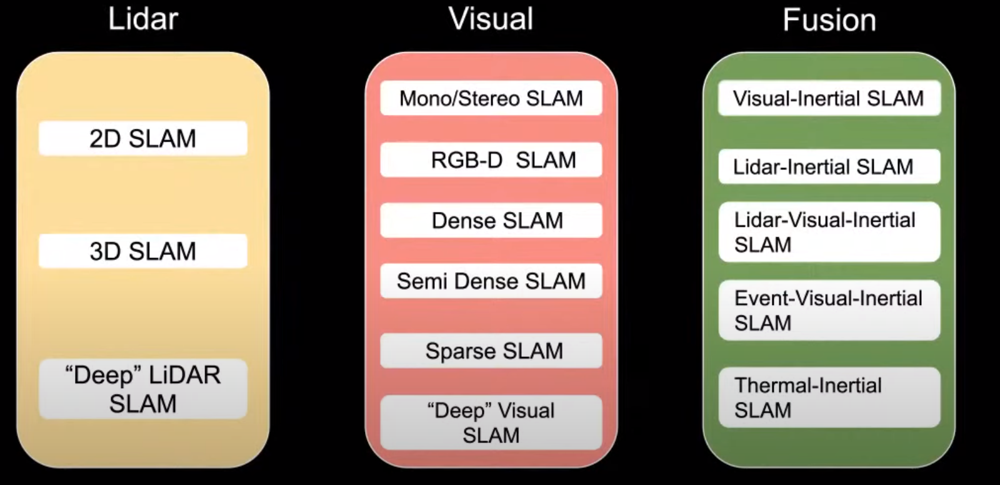
위 이미지에서 설명된 Visual / LiDAR 외로 GPS, 레이더, sonar 등 다른 방식들도 있음.
LiDAR SLAM
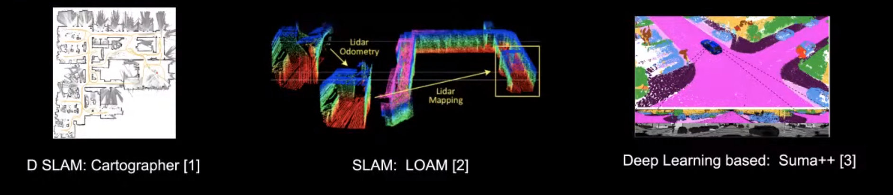
- 굉장히 정확한 편
- 공간의 생김새에 따라 정확도/안정성이 변화함
Visual SLAM
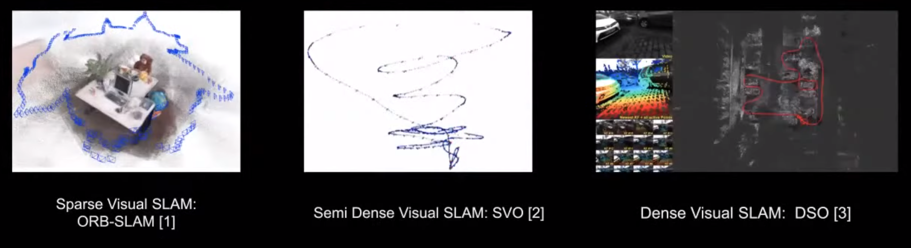
- 저렴한 센서
- 공간에 존재하는 texture에 따라 정확도/안정성이 변화함
- 3가지 Visual SLAM 방법론이 존재함
- Sparse SLAM: Sparse local feature를 (e.g. SIFT, ORB) 기반으로 SLAM 추정
- Semi-dense SLAM : Sparse와 Dense SLAM의 중간
- Dense SLAM: 이미지 전체의 정보를 사용해서 SLAM 추정
RGB-D / Visual-Inertial SLAM
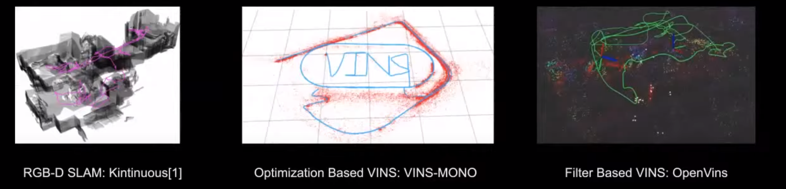
- 센서 1개만 쓰면 잘 안될때가 많다 (센서들마다 잘 되는곳/안되는 곳이 있다)
- 여러개의 센서를 써서 잘 안되는 부분을 커버한다.
- e.g. Visual + IMU 방식은 monocular 방식이 (i.e. 1개 카메라) 풀지 못하는 metric scale 복원 (i.e. 실제 m단위 스케일) 작업이 가능하다.
“Deep” Visual SLAM
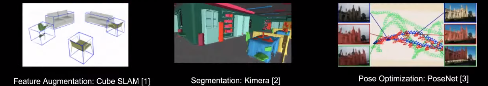
- 뉴럴넷을 사용해서 state estimation을 진행
- 기존의 방식이 가지던 한계점을 뉴럴넷이 극복할 수 있을 것이라는 희망
- Semantic 정보를 추출해내려는 시도
- 현재 이러한 방식으로 풀려고 하는 문제들
- 텍스처가 전혀 없는 곳에서 SLAM을 할 수 있을까?
- High dynamic range 환경에서 SLAM을 할 수 있을까?
- 모션 블러가 있는 곳에서 SLAM을 할 수 있을까?
- 움직이는 객체가 많은 곳에서 SLAM을 할 수 있을까?
Multi-Sensor Fusion
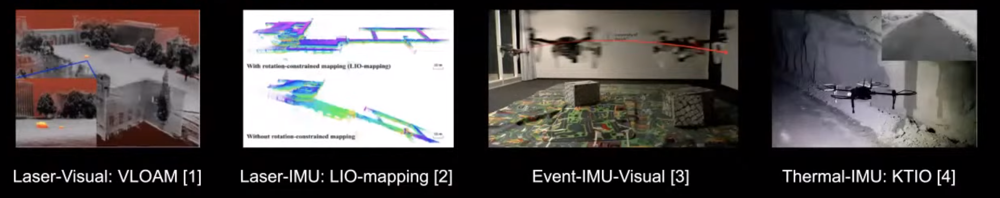
- 여러개의 센서를 사용
- 많은 정보를 얻음
- 센서들마다 가진 단점을 서로 상쇄
SLAM 성능을 측정하는 방법
데이터셋
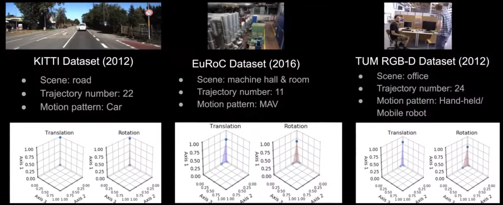
- KITTI, EuRoC, TUM 데이터셋은 SLAM 연구자들 사이에서 많이 쓰이는 데이터셋임.
- 하지만 위 데이터셋은 굉장히 단조로움
- 환경, 라벨, 모션 패턴이 모두 단조로움.
- 다양한 데이터가 없기 때문에, 위 데이터셋으로 뉴럴넷을 학습할 경우 특정 컨디션에 오버핏 할 가능성이 높음.
- 그러니 Tartan Dataset을 써라! (결국 본인 랩실 홍보 ㅋㅋ)
- Urban, rural, domestic, public, scifi 씬 등 20개 환경 구비
- RGB, Depth, Segmentation, Flow, Pose 등 데이터 구비
- Random translation / rotation의 500+ 모션 구비
- 빡센 환경 구비 (e.g. 연기, 안개, 어두운 밤 + 밝은 불빛, 비, 눈)
측정 metric
- Absolute Trajectory Error (ATE)와 Relative Pose Error (RPE) 기반으로 성능을 측정하는 경우가 많음.
- ATE와 RPE는 중간에 끊기는 데이터 (i.e. tracking lost)에 대응하지 못함.
- Challenging scene에서는 끊기는 경우가 허다함.
- AirLab에서는 robustness에 대한 새로운 척도를 제안
- Valid Rate = Length of valid trajectory / Total length
- Valid = Successfully initialised + not lose tracking
- ‘Valid’ 척도는 사실 굉장히 주관적임…
- 더 좋은 metric을 만들려고 연구중이라고 함.
- 어찌되었건 이 metric으로 봤었을 때, ORB-SLAM은 KITTI 벤치마크 기준 잘된다고 알려져있으나 Tartan Dataset에서는 완전 말아먹는 모습을 보임.
- TartanAir-V2를 만들고 있다고 함.
- 더 많은 환경을 만들 예정.
- IMU, LiDAR, Spherical, Fisheye, Event, Radar 등을 추가할 예정.
- Dynamic object를 넣을 예정
- GRound robot motion 패턴도 추가할 예정.
TartanVO: Learning-based Visual Odometry
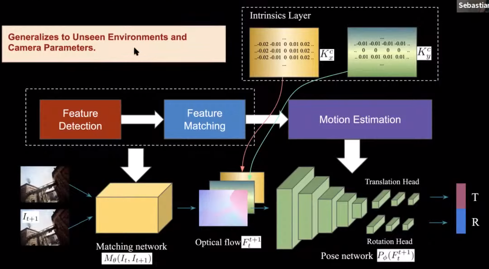
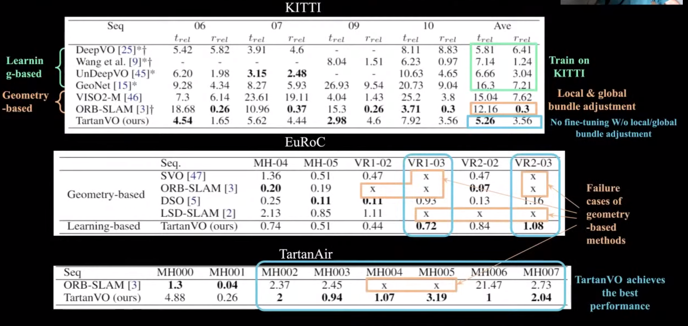
- TartanAir 처럼 다양한 환경/모션 정보가 있는 데이터셋이 있으니, SLAM 뉴럴넷을 학습해볼 수 있겠다.
- TartanVO
- 기존의 Feature detection / matching 단계를 하나의 뉴럴넷으로 대체
- 기존의 Motion estimation 과정을 deep optical flow + pose 뉴럴넷으로 대체
- 극심한 모션 블러에도 실패하지 않음 (기존의 SLAM 방식은 tracking lost가 남)
Super Odometry: IMU-centric LiDAR-Visual-Inertial Estimator for Challenging Environments
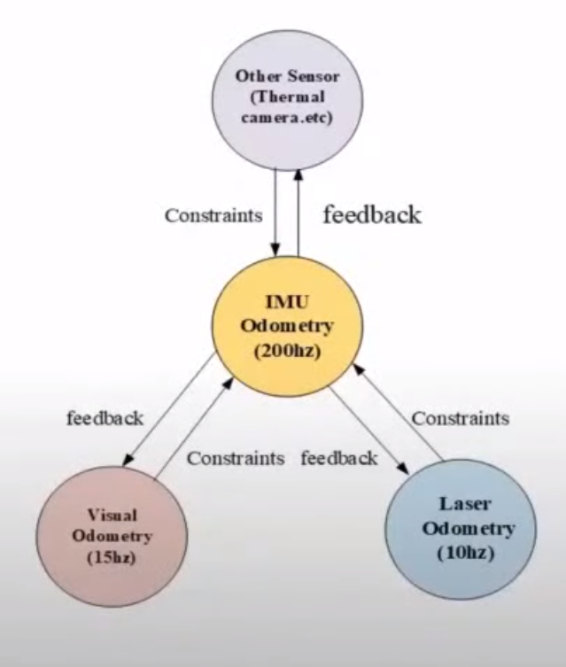
- Robustness를 높이는 방법 중 하나는 다양한 종류의 센서를 사용하는 것임.
- Super Odometry는 IMU를 중심으로 카메라와 라이다 같은 센서들을 퓨전해서 사용함.
- 왜 IMU 중심으로 사용하는가?
- 카메라는 texture가 부족할 때 실패함
- 라이다는 geometry가 부족할 때 실패함
- 이에 반해 IMU는 전혀 외적 요인을 타지 않음
- 특정 센서가 실패하는 상황이 올 때, 해당 센서로 부터 오는 정보는 사용하지 않고 잘 작동하고 있는 센서에서만 정보를 받아와서 다양한 상황에서도 안정적으로 위치추정을 할 수 있음.
- 왜 IMU 중심으로 사용하는가?
- 예시로, 2가지 상황을 보여줌
- 평평한 벽이 좌우로 나있는 긴 복도에서는 라이다가 실패함. 하지만 카메라 정보로부터 odometry를 계속 받기때문에 잘 됨.
- 어두운 방에 들어가면 아무것도 보이지 않아 카메라가 실패함. 하지만 라이다 정보를 계속 받아 odometry를 잘 유지함.
Visual localization
- Visual localization = “2D 이미지만 가지고 3D 공간에서 내가 어디있는지 알 수 있을까?”
- 3D 공간에 대한 2D appearance 정보는 전혀 없고, 3D 포인트 클라우드만 있을 때는 어떻게 할까?
- 비슷한 공간들에 대한 place recognition은 어떻게 할까?
2D-3D Line 매칭 기반 Localization
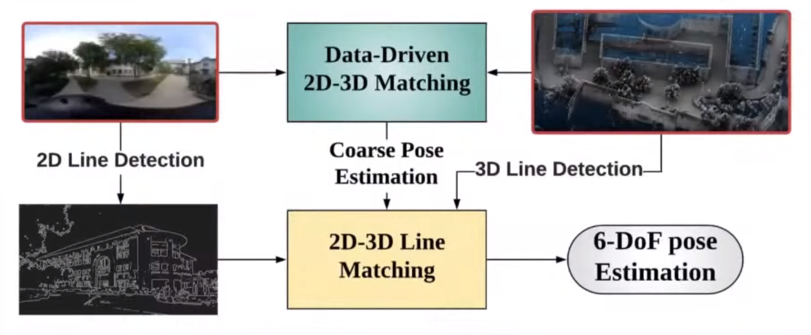
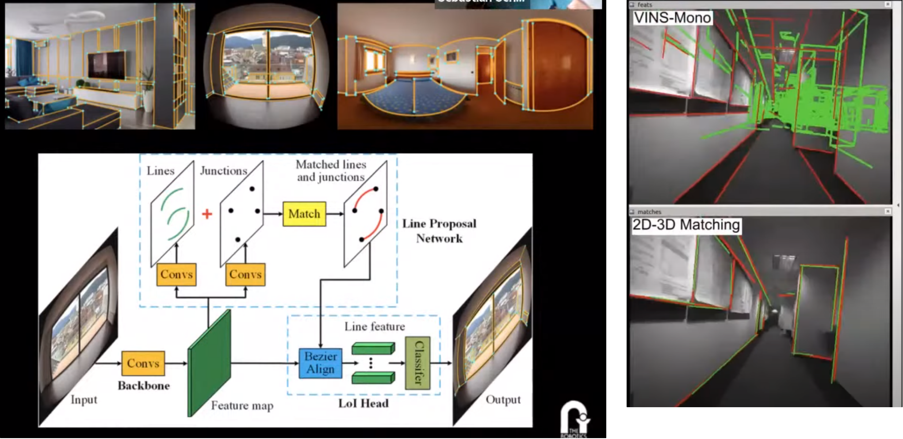
- 3D LiDAR map에서 카메라로 어떻게 위치를 찾을 수 있을까?
- Cross modality!
- Edge 정보를 이용해서 카메라 이미지 상의 2D line과 포인트 클라우드 지도상의 3D line을 매칭해보자!
- 이를 위해 새롭게 딥러닝 기반 line detector를 만들었다.
- 어떠한 카메라에서도 잘 작동한다 (e.g. pinhole, fisheye, spherical cameras)
- Intrinsic에 대해 전혀 영향을 받지 않는다.
- 이를 위해 새롭게 딥러닝 기반 line detector를 만들었다.
- 기존의 SLAM/odometry 방식보다 훨씬 적은 drift를 가지면서 할 수 있다
- (당연할걸수도…? localization은 drift를 가질 수 없음)
- 이 방식의 단점은, line feature는 실내처럼 사람이 만든 공간에서는 많이 나타나지만 자연공간에서는 많이 나타나지 않다는 점임.
- 참고논문:
- Yu 2020 - Line-based 2D-3D registration and camera localization in structured envrionemnts
- Yu 2020 - Monocular camera localization in prior LiDAR Maps with 2D-3D correspondences
- Yu 2020 - ULSD: Unified Line Segment Detection across Pinhole, Fisheye, and Spherical Cameras
시점변화/조명변화/날씨변화에 강인한 descriptor learning
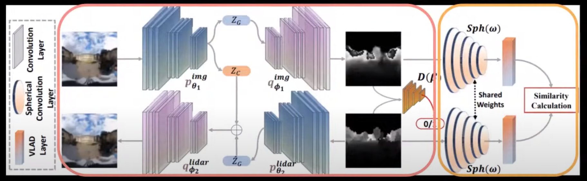
- 자연공간에서는 어떤 방식으로 매칭을 해야할까?
- 어떤 방식이 좋은지 모르겠다면… 그 방식을 딥러닝으로 학습하도록 하자.
- Visual-LiDAR 도메인 사이에서 사용될 수 있는 descriptor를 학습하였다.
- 전체 네트워크는 matching module과 similarity module로 나눠진다.
- 참고 논문:
- Yin 2019 - A multi-domain feature learning method for visual place recognition
- Yin 2020 - SeqSphereVLAD: Sequence Matching Enhanced Orientation-invariant Place recognition
- Yin 2021 - FusionVLAD: A Multi-View Deep Fusion Networks for Viewpoint-Free 3D Place recognition
- Yin 2021 - i3dLoc: Image-to-range Cross-domain Localization Robust t oinconsistent Environmental Conditions
Lifelong Graph Learning을 이용한 feature matching / place recognition
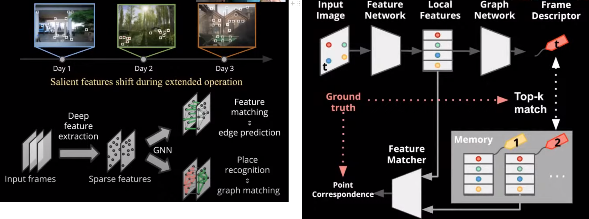
- SLAM에서 loop closure를 할 때 place recognition을 통해서 이전에 와본 장소로 왔다는것을 인식하고, local feature matching을 통해 localization을 한다. 이후 graph optimization을 한다.
- 이 때 사용되는 local feature extraction과 matching 과정을 lifelong graph learning을 이용해서 개선시킨다.
- Memory module을 통해 실시간으로 매칭을 개선한다
- Memory replay를 통해 기억이 사라지는 것 (i.e. catastrophic forgetting)을 방지한다
- 참고논문: Wang 2021 - Lifelong Graph Learning
Large scale sub-millimeter mapping (with lightweight and low-cost weight sensors)
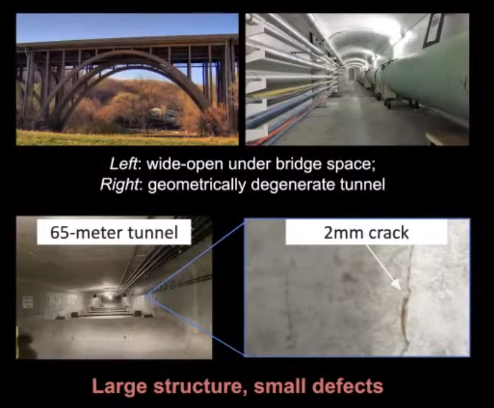
- 위 사진들과 같이 고해상도 SLAM이 작동하기 어려운 공간들이 있다.
- 위와 같은 환경에서 강인하게 SLAM을 작동하기 위해서 2가지 전략을 사용한다.
- 최대한 Field of view (i.e. 시야 범위)를 넓힌다
- 넓은 범위를 봄으로써 특정 공간에서 degenerate case가 나타나도 다른 시야 범위의 공간정보를 이용해서 실패를 방지한다.
- 다양한 센서들을 퓨전해서 좋은 sparse model을 얻은 후, dense 모델로 재구성한다.
- 카메라+라이다+IMU로 sparse reconstruction을 먼저 한다.
- 이후 stereo depth와 laser range projection을 퓨전해서 dense reconstruction을 수행한다.
- 최대한 Field of view (i.e. 시야 범위)를 넓힌다
카메라+라이다+IMU 퓨전
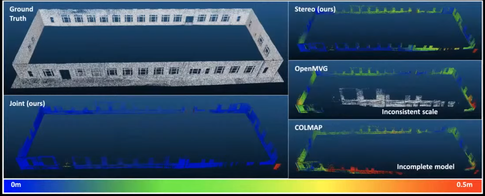
- 많이 사용되는 COLMAP, OpenMVG와 같은 이미지 기반 reconstruction 기법에서는 제대로 scale을 측정하지 못하는 경우가 많다.
- 위의 연구는 joint camera-lidar optimisation을 통해 scale 정보까지 확실하게 추정할 수 있다.
- 참고자료:
- Zhen 2020 - LiDAR-enhanced Structure-from-Motion
- Zhen 2019 - A Joint Optimization Approach of LiDAR-Camera Fusion for Accurate Dense 3-D Reconstructions
- Zhen 2019 - Estimating the localizability in tunnel-like environments using LiDAR and UWB
- Zhen 2018 - A Unified 3D Mapping Framework Using a 3D or 2D LiDAR
- Zhen 2017 - Robust localization and localizability estimation with a rotating laser scanner
저해상도 이미지 기반 고해상도 dense stereo reconstruction
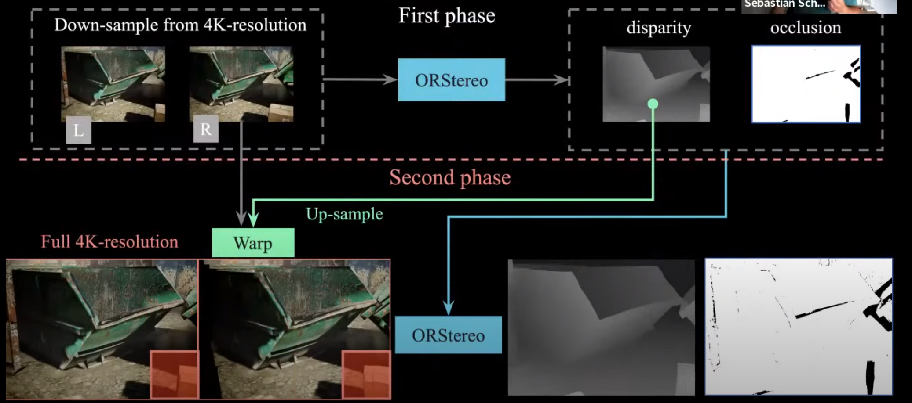
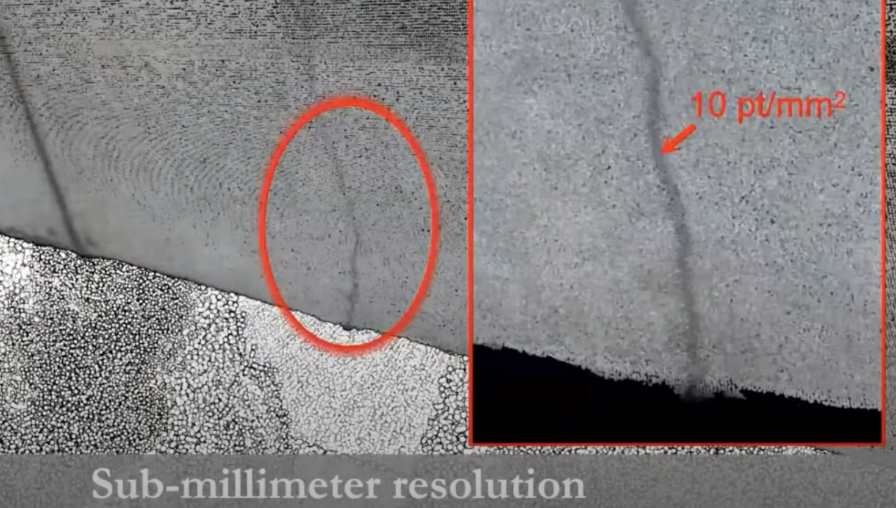
- Stereo reconstruction을 잘 하는 방법에는 ‘4K의 고해상도 카메라’ + ‘넓은 baseline’을 가지고 촬영하면 된다.
- 이렇게 하면 sub-millimeter 정확도까지 얻어낼 수 있다.
- 기존의 방식으로는 수천만개의 픽셀들에 대해 disparity 계산을 할 수 없다 (딥러닝을 쓰던 안쓰던 RAM을 너무 많이 차지할것이다)
- 제안하는 연구는, 기존의 4K 이미지를 다운샘플링해서 딥러닝 기반 방식으로 disparity와 occlusion을 구한 다음에, disparity를 4K로 업샘플링해서 기존의 4K 이미지와 부분적으로 비교하여 disparity와 occlusion을 얻어낸다.
- 이런 방식으로 하면 기존의 저해상도 이미지에서 얻은 disparity 정보보다 훨씬 더 많은 디테일을 얻을 수 있다.
- 이 정교한 disparity 정보를 dense reconstruction에 사용하면, 위와 같이 굉장히 작은 균열 (sub-millimeter)도 검출할 수 있다.
- 참고자료:
Open questions
- 현재 SLAM을 기반으로 perception, planning, control이 이뤄지고 있는 로봇들이 많다.
- 이러한 시스템에는 Metric SLAM이 필수적인데, 막상 연구개발 해보니까 이게 쉽지 않다.
- Metric SLAM을 대체할 수 있는 것이 있을까?
- 만약에 SLAM이 우리가 생각했던대로 성공할 수 없는 기술이라면???
- ‘강인함’을 재는 척도는 어떤게 좋을까?
- 맵의 품질은 어떻게 재야할까?
- 딥러닝을 SLAM에 진짜 쓸 수 있는걸까?
- Generalization은 어떻게 해야할까?
- Online learning 방식이 좋을까? 아니면 시뮬레이션에서 더 학습하고 오는게 좋을까?
- 시뮬레이션을 쓴다면 domain adaptation은?
참가자 질문
- Ground truth는 어떻게 얻는가?
- 실외: Survey scanner로 맵을 땀. GPS로 위치 추정
- 실내: Survey scanner / 라이다로 맵을 땀. 모션캡처로 위치 추정
- Edge 기기에서 잘 도는 SLAM 추천해주세요!
- 무슨 센서를 쓰는지, 어떤 정보를 얻고싶은지에 따라 다르다. 하나의 SLAM으로 다 해먹을 수 없음.
- Visual place recognition과 SLAM의 접점은 어떻게 되는가?
- 증강현실 등에서 robust localization은 중요하다 (i.e. global cooridinate를 알아야하는 경우)
- 3D map은 있는데, 2D 이미지 센서로 연결점을 만들어야할 때 중요하다.
- Loop closure할 때도 중요하다.
- 라스트마일 배달로봇, 맹인 가이드 로봇 등에 중요하다.
- 인턴십 뽑나요! (ㅋㅋ)
- 여름 인턴십 프로그램이 있다 (학부생)
- 슬램 성능은 어떻게 재나요?
- ATE, RPE
- 맵에 대한 정보는 조금 더 연구가 필요함.
- 안개끼고 눈내리는 곳에서 센서는 뭘 써야할까요?
- Thermal camera + IMU + radar 좋은듯!
- Brownout effect에는 어떻게 대응하나요?
- (Brownout effect = 먼지가 엄청 많은 곳)
- 필터로 어느정도 제거해줄 수 있음.
- 하지만 너무 심한 경우에는 그냥 카메라/라이다 센서 데이터를 사용하지 않고 레이더만 사용한다던가
- 또는 특정 빛의 스펙트럼을 받는 카메라를 사용할 수 있음.
- SLAM에서 traditional / learning-based 중에 어떤걸 써야할까? (Prof. Kaess 질문)
- 글쎄… 프론트엔드에서는 하나만 쓰는거보다는 엔지니어링 관점에서 섞어쓰면 어떨까 생각한다.
- 피쳐가 있을 때는 traditional, 없을때는 learning-based를 쓰면 어떨까?
- 백엔드에서는… 그건 당신이 더 전문가잖아! (ㅋㅋㅋ)
- 기존의 bundle adjustment, pose graph optimisation, scan matching 등은 잘됨.
- 지금 현재 방법에서 속도를 더 빠르게 하는 것 외로는 다른 어떤 방식이 있는지 잘 모르겠음.
- 현재 방식이 잘 안되는 경우는 대부분 ‘gaussian model assumption’에서 나오는 것이라고 봄.
- 딥러닝 방식으로 시도를 하기도 했지만… 아직 인정해줄만큼 성과가 안나옴. 하지만 길게 보았을때 어떻게 될지는 모르겠음
- 기존의 bundle adjustment, pose graph optimisation, scan matching 등은 잘됨.
- 글쎄… 프론트엔드에서는 하나만 쓰는거보다는 엔지니어링 관점에서 섞어쓰면 어떨까 생각한다.
- 센서퓨전을 할 때 어떤 방법을 써야하는가? ~~~한 케이스가 있는데, EKF를 써야할지 UKF를 써야할지 모르겠다.
- 왠만한 경우에는 EKF도 잘 된다.
- UKF를 쓰고 싶으면 ‘Unscented’ 파트가 진짜 필요한지 생각해봐야한다.
- Non-Gaussian인가?
- Loosely-coupled vs Tightly-coupled의 차이가 무엇인가?
- Loosely-coupled: 여러개의 센서가 각각 odometry를 계산하고, 그걸 합친다.
- Tightly-coupled: 여러개의 센서 값을 기반으로 하나의 odometry를 계산한다.
Related Posts